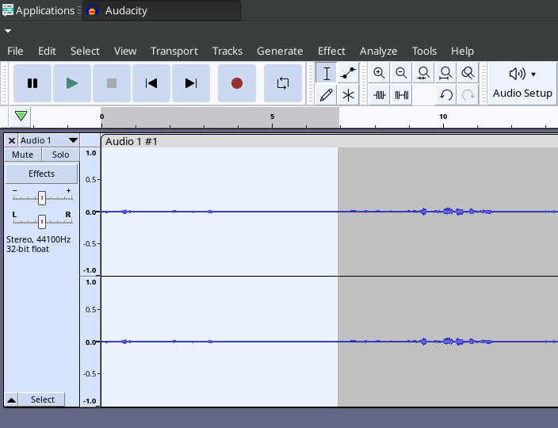
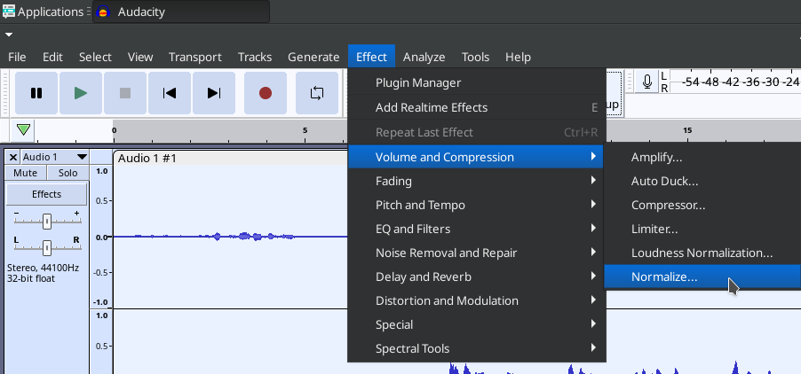
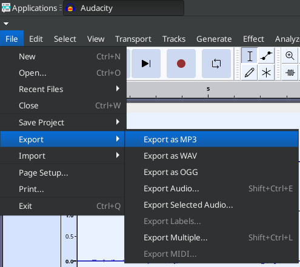
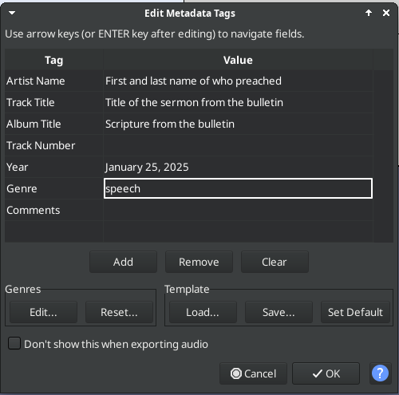

Audacity Instructions
- Click "Record" button before the sermon starts
- Click "Stop" button after the closing prayer (or trim after the prayer finishes)
- Trim deadspace before sermon starts and after final prayer
- Select and drag cursor over section and then hit "Delete" on keyboard
-

- Select All audio (either Ctrl+A or mouse or Edit menu)
- Select "Normalize" from menu
-

- Use preset settings we already have configured
- Export MP3 from menu
-

- Name file as YYYYMMDD.mp3 with today's date
- Click Save and fill in metadata when prompted
-
